Definizione - Memoria binaria
Una memoria binaria è un circuito in grado di memorizzare il valore di un bit.
Esse sono realizzate utilizzando delle RSA e sono uno dei componenti primitivi più importanti, in quanto sono utilizzate per realizzare reti sincrone e, ad esempio, circuiti come le RAM.
In base alla sequenza di ingressi e alla temporizzazione dei comandi di modifica, si hanno tre tipi di memorie:
Esse sono realizzate utilizzando delle RSA e sono uno dei componenti primitivi più importanti, in quanto sono utilizzate per realizzare reti sincrone e, ad esempio, circuiti come le RAM.
In base alla sequenza di ingressi e alla temporizzazione dei comandi di modifica, si hanno tre tipi di memorie:
- Latch SR;
- Latch CD;
- Flip-flop D.
Definizione - Latch SR
Il Latch SR è la memoria binaria più semplice ed è caratterizzata da:
Il grafo degli stati che descrive questo componente è il seguente da cui è semplice derivare la tabella delle transizioni
da cui è semplice derivare la tabella delle transizioni  da cui è facile ottenere la sintesi combinatoria:
da cui è facile ottenere la sintesi combinatoria:
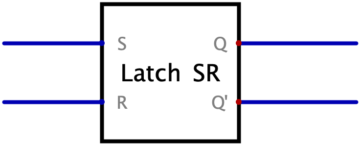
- un ingresso di set \( S\);
- un ingresso di reset \( R\);
- due uscite che rendono disponibile il valore del bit memorizzato (\( Q\)) ed il suo complemento (\( Q'\)).
Si ha quindi che alla configurazione \( 00\) possono corrispondere due uscite differenti mentre non è previsto l'utilizzo della configurazione \( 11\).
Il grafo degli stati che descrive questo componente è il seguente
dove gli stati \( A\) e \( B\) indicano
Dal grafo degli stati è quindi facile derivare la tabella di flusso
- l'uscita \( Q\) è uguale alla sola variabile di stato \( y\);
- lo stato futuro \( Y\) può essere sintetizzato in diversi modi (che saranno trattati in seguito).
Definizione - Latch SR - Sintesi PS e a NOR dello stato futuro
Data la tabella della verità dello stato futuro del Latch SR  è semplice ottenere la sintesi PS, ovvero
è semplice ottenere la sintesi PS, ovvero  che equivale all'espressione \( Y = \overline{R} \cdot (y + S)\) e al circuito Per ottenere quindi l'uscita complementata \( Q'\) sarebbe necessario utilizzare anche un NOT: è invece possibile utilizzare una sintesi a NOR, da cui si ottiene l'espressione \[ Y = R \downarrow (y \downarrow S) \] che equivale al seguente circuito dove è già fornita l'uscita complementata.
che equivale all'espressione \( Y = \overline{R} \cdot (y + S)\) e al circuito Per ottenere quindi l'uscita complementata \( Q'\) sarebbe necessario utilizzare anche un NOT: è invece possibile utilizzare una sintesi a NOR, da cui si ottiene l'espressione \[ Y = R \downarrow (y \downarrow S) \] che equivale al seguente circuito dove è già fornita l'uscita complementata.
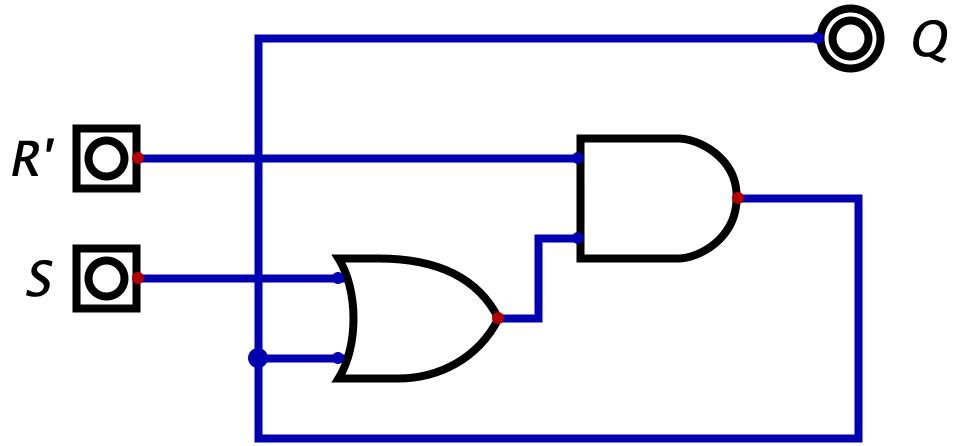
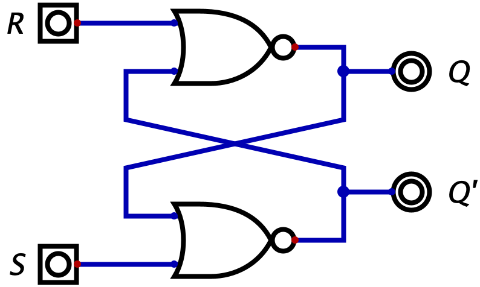
Osservazioni personali - Uscita complementata e configurazione vietata \( 11\)
Per verificare che il circuito fornisca l'uscita complementata è necessario verificare che la tabella della verità delle due uscite sia coerente, ovvero che \[ S \downarrow y =_{?} \overline{R \downarrow (y \downarrow S)} \] Costruendo la tabella della verità si ottiene Come si può notare, le due uscite sono coerenti per le diverse configurazioni ad eccezione di tre casi:
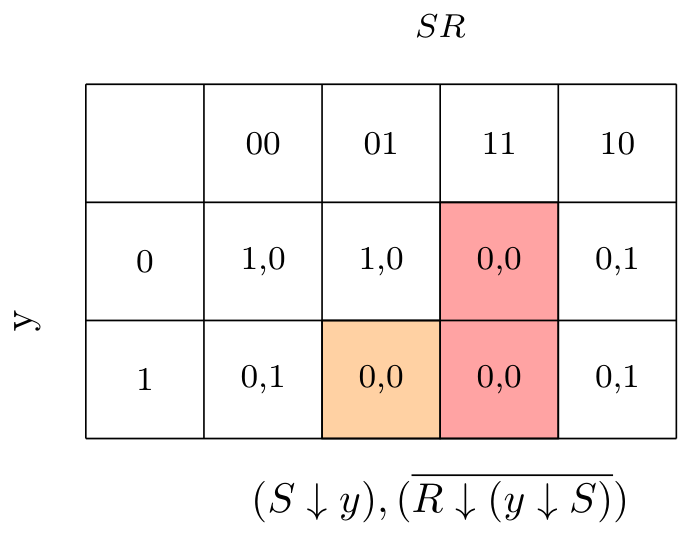
- con la configurazione degli ingressi \( 11\), che non risulta essere un problema in quanto la configurazione è vietata nell'uso corretto della rete;
- con lo stato corrente \( 1\) (ovvero lo stato "Memorizzo \( 1\)") e la configurazione di ingressi \( 01\) (che equivalgono all'azione "Scrivi \( 0\)"), che non risulta essere un problema in quanto cambiando un bit di ingresso alla volta risulta impossibile trovarsi in questa situazione (in quanto la configurazione di ingressi \( 01\) porterebbe ad essere nello stato \( y = 0\)).
Definizione - Latch SR - Sintesi SP e a NAND dello stato futuro
In modo analogo alla sintesi PS, è facile ottenere dalla tabella della verità dello stato futuro del Latch SR  la sintesi SP
la sintesi SP  Anche in questo caso è conveniente effettuare la sintesi a NAND per ottenere l'uscita complementata, da cui si ottiene l'espressione \[ Y = \overline{S} \uparrow (y + \overline{R}) \] e il circuito
Anche in questo caso è conveniente effettuare la sintesi a NAND per ottenere l'uscita complementata, da cui si ottiene l'espressione \[ Y = \overline{S} \uparrow (y + \overline{R}) \] e il circuito
equivalente all'espressione \( Y = S \cdot (y + \overline{R})\) e al circuito
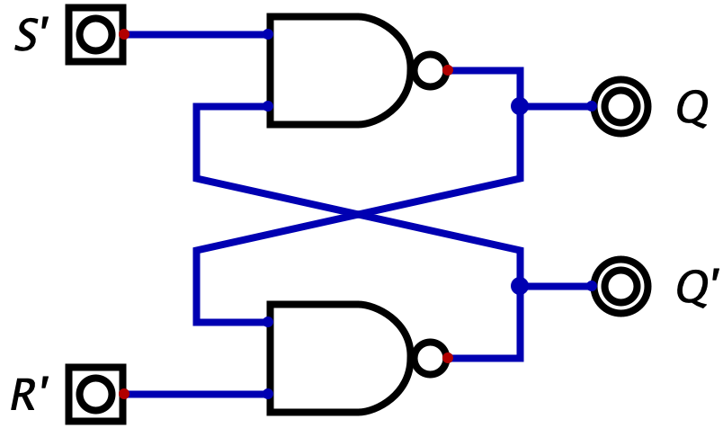
Osservazioni personali - Latch \( \bar{S}\bar{R}\)
Nel caso il Latch sia realizzato con la sintesi a NAND, esso è anche chiamato Latch \( \bar{S}\bar{R}\) in quanto richiede gli ingressi complementati.
Definizione - Stato iniziale nei Latch SR
Essendo il Latch SR una rete sequenziale, "soffre" della casualità dello stato iniziale: se in casi come le RAM ciò non risulta essere un problema, in altri è necessario che tali valori possano essere predeterminati.
Esistono per questo motivo delle varianti di questo componente che introducono degli ingressi con priorità maggiore rispetto agli ingressi \( S\) e \( R\):
L'idea è quindi quella di creare una rete di combinatoria di inizializzazione che "piloti" il latch durante durante l'inizializzazione e il cui comportamento è il seguente (con \( S_{2}\), \( R_{2}\) che sono le uscite della rete combinatoria che andranno poi a pilotare il "vero" latch) Tale circuito potrebbe essere inoltre ulteriormente semplificato conoscendo la struttura interna del Latch SR (unendo l'OR ed il NOR ad esempio) oppure realizzando la rete combinatoria più adatta a "pilotare" un Latch \( \overline{S}\overline{R}\).
Tale circuito potrebbe essere inoltre ulteriormente semplificato conoscendo la struttura interna del Latch SR (unendo l'OR ed il NOR ad esempio) oppure realizzando la rete combinatoria più adatta a "pilotare" un Latch \( \overline{S}\overline{R}\).
Per memorizzare inizialmente il bit \( 0\) si può utilizzare la seguente rete mentre per memorizzare \( 1\)
Esistono per questo motivo delle varianti di questo componente che introducono degli ingressi con priorità maggiore rispetto agli ingressi \( S\) e \( R\):
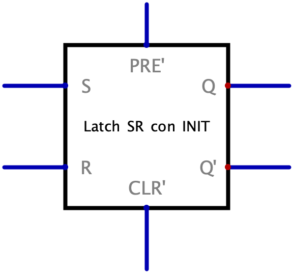
- l'ingresso di preset (indicato con \( PRE'\) dato che l'ingresso è attivo basso) che forza il latch a memorizzare il bit \( 1\);
- l'ingresso di clear (indicato con \( CLR'\) dato che l'ingresso è attivo basso) che forza il latch a memorizzare il bit \( 0\).
L'idea è quindi quella di creare una rete di combinatoria di inizializzazione che "piloti" il latch durante durante l'inizializzazione e il cui comportamento è il seguente (con \( S_{2}\), \( R_{2}\) che sono le uscite della rete combinatoria che andranno poi a pilotare il "vero" latch)
da cui è possibile ottenere le seguenti espressioni: \begin{aligned} & S_{2} = PRE + (\overline{CLR} \cdot S) & R_{2} = CLR + (\overline{PRE} \cdot R) \end{aligned} equivalenti alla seguente rete:
Per memorizzare inizialmente il bit \( 0\) si può utilizzare la seguente rete
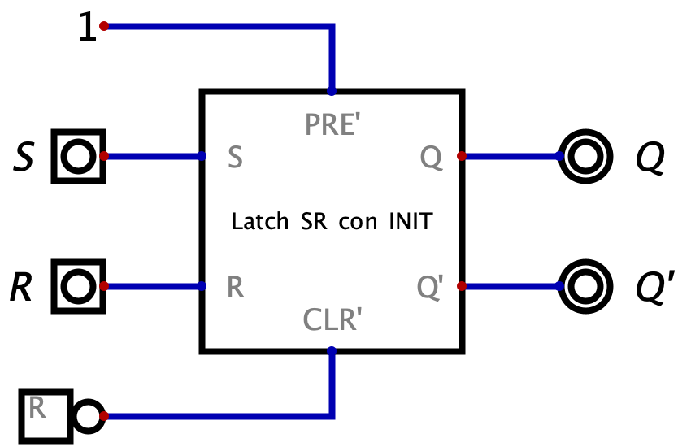
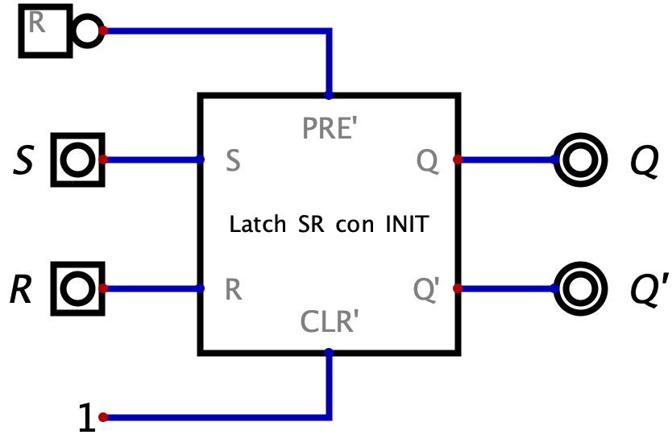
Definizione - Durata minima degli ingressi e metastabilità
La durata minima degli ingressi di un latch è di \( 2 \cdot \tau_{p}\) ed è solitamente indicata dal costruttore con la dicitura "pulse duration".
Nel caso non si rispetti questa durata minima, si ha che il latch può andare in metastabilità.
Nel caso non si rispetti questa durata minima, si ha che il latch può andare in metastabilità.
Osservazioni personali - Un po' di elettronica
Considerando il segnale di stato del Latch, esso può essere "diviso idealmente in due", ovvero in stato presente \( q\) e stato futuro \( Q\) (il valore dello stato che si avrà tra \( 2\tau_{p}\)).
Idealmente tale bit assume solo due valori ("High" e "Low"), invece nella realtà è un segnale analogico che assume un numero infinito di valori e che si considera H o L in base alla vicinanza rispetto ad un valore predefinito. Il segnale è tuttavia soggetto a rumore (a causa di fenomeni fisici inevitabili) e per rendere il circuito il più robusto possibile si decide di modificare la pendenza della retta che descrive il rapporto \( Q = q\) nel seguente modo In questo modo si ottengono due effetti:  ovvero tenderà alla stabilità. Nel caso si avesse una pendenza maggiore di \( 1\), ciò porterebbe invece all'effetto contrario.
ovvero tenderà alla stabilità. Nel caso si avesse una pendenza maggiore di \( 1\), ciò porterebbe invece all'effetto contrario.
Tuttavia per poter ottenere le pendenze corrette nelle zone di campionamento, è necessario "inserire" una zona con pendenza maggiore di \( 1\) e ciò porta alla creazione di un terzo "punto focale M" (oltre ai "punti focali H e L"). Tale punto è detto di metastabilità in quanto non si può assumere per esso un valore preciso. Si ha inoltre che al primo disturbo assumerà un valore indeterminabile.
È quindi necessario rispettare il vincolo di "pulse-duration" affinchè la rete funzioni correttamente.
Idealmente tale bit assume solo due valori ("High" e "Low"), invece nella realtà è un segnale analogico che assume un numero infinito di valori e che si considera H o L in base alla vicinanza rispetto ad un valore predefinito.
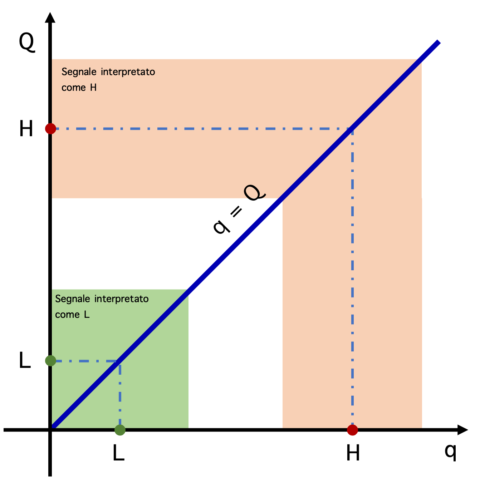
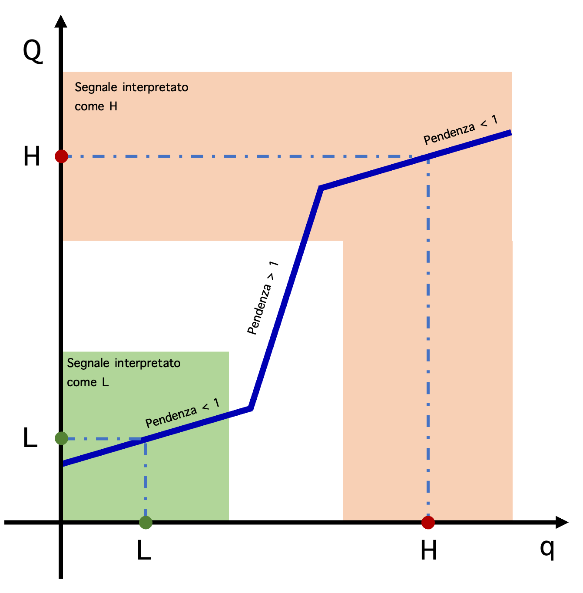
- nelle zone in cui la pendenza è minore di \( 1\) si rende il circuito più incline alla stabilità;
- nelle zone in cui la pendenza è maggiore di \( 1\) si rende il circuito meno stabile;
Tuttavia per poter ottenere le pendenze corrette nelle zone di campionamento, è necessario "inserire" una zona con pendenza maggiore di \( 1\) e ciò porta alla creazione di un terzo "punto focale M" (oltre ai "punti focali H e L"). Tale punto è detto di metastabilità in quanto non si può assumere per esso un valore preciso. Si ha inoltre che al primo disturbo assumerà un valore indeterminabile.
È quindi necessario rispettare il vincolo di "pulse-duration" affinchè la rete funzioni correttamente.
Definizione - Latch CD
Il Latch CD ha lo stesso scopo del Latch SR ed è caratterizzato da:  Dal grafo degli stati è quindi facile derivare la tabella di flusso
Dal grafo degli stati è quindi facile derivare la tabella di flusso
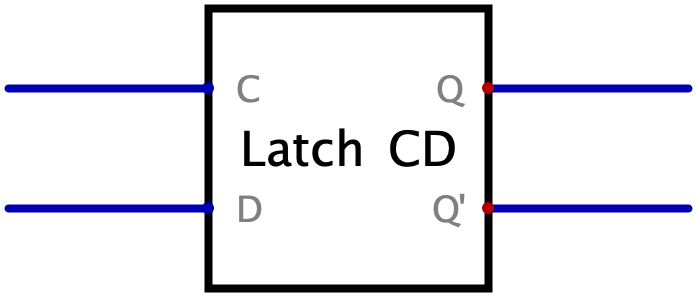
- un ingresso di campionamento \( C\), che indica se il latch deve memorizzare i dati (con \( C = 1\) permette la memorizzazione, con \( C=0\) mantiene il bit memorizzato);
- un ingresso di dati \( D\), che indica il dato da memorizzare;
- due uscite che rendono disponibile il valore del bit memorizzato (\( Q\)) ed il suo complemento (\( Q'\)).
Il grafo degli stati che descrive questo componente è il seguente
dove gli stati \( A\) e \( B\) indicano
da cui è semplice derivare la tabella delle transizioni
da cui è facile ottenere la sintesi combinatoria:
- l'uscita \( Q\) è uguale alla sola variabile di stato \( y\);
- lo stato futuro \( Y\) può essere sintetizzata sia in configurazione PS che SP, ricordando di includere i termini ridondanti per evitare le alee statiche.
Osservazioni personali - Latch ED
Il Latch CD è anche conosciuto come Latch ED (dove E sta per ENABLE).
Definizione - Sintesi del Latch CD sfruttando i Latch SR
Nel caso si sintetizzasse il Latch in forma SP o PS, si dovrebbero aggiungere componenti per fornire l'uscita complementata e si dovrebbe gestire la rete di inizializzazione.
È possibile evitare ciò utilizzando il Latch SR con inizializzazione e pilotandolo attraverso una rete combinatoria che "traduce il codice CD in codice SR".
Per ottenere tale codificatore è sufficiente ragionare sulle configurazioni di ingresso dei due latch: Dato che il Latch CD sintetizzato in questo modo ha più componenti in cascata, si ha che il suo transitorio è maggiore rispetto a quello del Latch SR (considerando inoltre un ulteriore tempo per evitare che i due ingressi "pilotati" cambino contemporaneamente).
È possibile evitare ciò utilizzando il Latch SR con inizializzazione e pilotandolo attraverso una rete combinatoria che "traduce il codice CD in codice SR".
Per ottenere tale codificatore è sufficiente ragionare sulle configurazioni di ingresso dei due latch:
- il Latch SR memorizza \( 0\) quando ha in ingresso i valori \( S = 0\) e \( R = 1\) mentre il Latch CD memorizza \( 0\) con gli ingressi \( C = 1\) e \( D = 0\);
- il Latch SR memorizza \( 1\) quando ha in ingresso i valori \( S = 1\) e \( R = 0\) mentre il Latch CD memorizza \( 1\) con gli ingressi \( C = 1\) e \( D = 1\).
- l'uscita \( S\) è attiva quando si ha \( C = 1\) e \( D = 0\), il mintermine sarà quindi \( S = C \cdot D\);
- l'uscita \( R\) è attiva quando si ha \( C = 1\) e \( D = 1\), il mintermine sarà quindi \( R = C \cdot \overline{D}\).
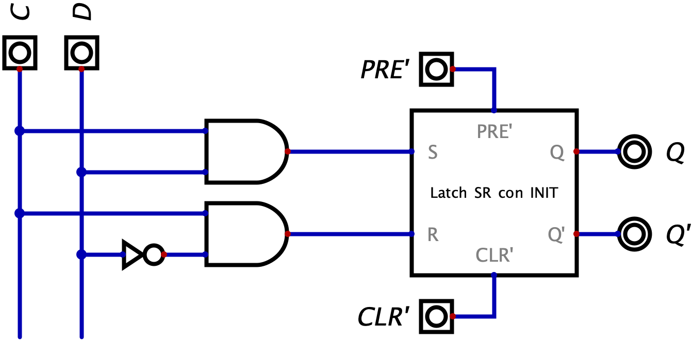
Definizione - Pulse duration, tempo di set-up, di hold e di risposta nel Latch CD
Come per il Latch SR, anche nel Latch CD, esiste una durata minima degli ingressi.
In questo caso, la "pulse-duration" (\( t_{w}\)) è la durata minima per cui il comando di campionamento (\( C = 1\)) deve essere valido (altrimenti si incorre nella metastabilità).
Nel caso del Latch CD è possibile caratterizzare meglio i tempi da rispettare:
L'uscita della rete sarà aggiornata solo dopo un tempo di risposta \( t_{r}\).
In questo caso, la "pulse-duration" (\( t_{w}\)) è la durata minima per cui il comando di campionamento (\( C = 1\)) deve essere valido (altrimenti si incorre nella metastabilità).
Nel caso del Latch CD è possibile caratterizzare meglio i tempi da rispettare:
- una volta iniziato il campionamento (\( C\) diventa \( 1\)) è necessario aspettare un "set-up time" (\( t_{su}\)) per la propagazione del segnale attraverso i gate. Si ha quindi che la "pulse-duration" deve essere almeno più grande del "set-up time";
- una volta terminato il campionamento (\( C\) diventa \( 0\)) è necessario aspettare un "hold time" (\( t_{h}\)) prima di modificare l'ingresso \( D\) affinchè la retroazione si inneschi.
L'uscita della rete sarà aggiornata solo dopo un tempo di risposta \( t_{r}\).
Definizione - Uscita trasparente nel Latch CD
Quando \( C = 1\), si ha che ogni cambiamento di \( D\) (se tenuto costante per un adeguato tempo) si riflette (dopo il relativo tempo di risposta) direttamente sull'uscita \( Q\), provocando il fenomeno di uscita trasparente (ciò che entra, esce).
Qualora si collegasse l'uscita \( Q\) in retroazione diretta con l'ingresso \( D\) si avrebbe una continua oscillazione di valori (in quanto il tempo di hold non è rispettato) rendendo impossibile questo montaggio.
Qualora si collegasse l'uscita \( Q\) in retroazione diretta con l'ingresso \( D\) si avrebbe una continua oscillazione di valori (in quanto il tempo di hold non è rispettato) rendendo impossibile questo montaggio.
Definizione - Flip-flop D
Il Flip-flop D è una rete sequenziale asincrona caratterizzata da:
I tempi caratteristici di un Flip-flop D hanno gli stessi nomi di quelli del Latch CD, ma con significati leggermente diversi in quanto sono tutti riferiti al fronte di salita del clock (dato che è l'unico evento che può modificare lo stato). In particolare si ha che: Per comprendere il funzionamento, può essere utile immaginare i due ingressi in uno stato di quiete, entrambi a \( 0\).
Per comprendere il funzionamento, può essere utile immaginare i due ingressi in uno stato di quiete, entrambi a \( 0\).
In questa situazione si ha che il "Latch Master" è in fase di campionamento (grazie al NOT che trasforma il segnale in \( 1\)) mentre l'altro è stabile. Nel momento in cui \( CLK\) passa da \( 0\) a \( 1\), si ha che il "Latch Slave" inizia il campionamento e, in questo momento assume il valore "memorizzato" nel Master (che ha continuato a memorizzare il valore di \( D\)). Fino a che \( CLK\) non vedrà un altro fronte di salita, la rete non riaggiornerà le sue uscite dato che:
Un'altra sintesi possibile è quella "Edge-Triggered": essa contiene scelte progettuali non intuitive (come l'utilizzo di tre variabili di stato) ma utilizza meno gate rispetto a quella "Master-Slave". Essa utilizza infatti solo 6 NAND (invece di 8) e prevede che i comandi \( PRE'\) e \( CLR'\) siano prioritari rispetto al segnale CLK.
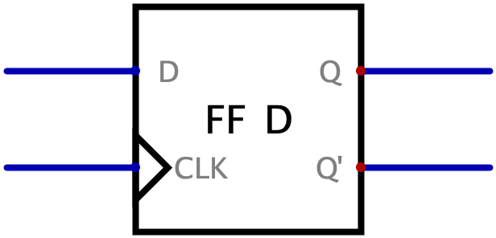
- un ingresso \( D\), che indica il dato da memorizzare;
- un ingresso \( CLK\), che svolge il ruolo di segnale di campionamento;
- due uscite che rendono disponibile il valore del bit memorizzato (\( Q\)) ed il suo complemento (\( Q'\)).
I tempi caratteristici di un Flip-flop D hanno gli stessi nomi di quelli del Latch CD, ma con significati leggermente diversi in quanto sono tutti riferiti al fronte di salita del clock (dato che è l'unico evento che può modificare lo stato). In particolare si ha che:
- il tempo di set-up indica il tempo minimo per cui \( D\) deve rimanere costante prima del fronte;
- il tempo di hold indica il tempo minimo per cui D deve rimanere costante dopo al fronte;
- il tempo di risposta indica il tempo massimo del transitorio delle uscite \( Q\) e \( Q'\).
In questa situazione si ha che il "Latch Master" è in fase di campionamento (grazie al NOT che trasforma il segnale in \( 1\)) mentre l'altro è stabile. Nel momento in cui \( CLK\) passa da \( 0\) a \( 1\), si ha che il "Latch Slave" inizia il campionamento e, in questo momento assume il valore "memorizzato" nel Master (che ha continuato a memorizzare il valore di \( D\)). Fino a che \( CLK\) non vedrà un altro fronte di salita, la rete non riaggiornerà le sue uscite dato che:
- fino a che \( CLK\) rimane a \( 1\) si avrà che il Master non è in campionamento (e continua a memorizzare il segnale "attuale per la rete" di \( D\));
- quando \( CLK\) passa a \( 1\) a \( 0\), sarà lo Slave a terminare il campionamento (e a non riaggiornarsi).
Un'altra sintesi possibile è quella "Edge-Triggered": essa contiene scelte progettuali non intuitive (come l'utilizzo di tre variabili di stato) ma utilizza meno gate rispetto a quella "Master-Slave". Essa utilizza infatti solo 6 NAND (invece di 8) e prevede che i comandi \( PRE'\) e \( CLR'\) siano prioritari rispetto al segnale CLK.
Definizione - Flip-flop D come elemento di ritardo
Se l'ingresso \( CLK\) è pilotato da un segnale periodico (detto di clock) il Flip-flop ritarda il segnale di uscita \( Q\) (rispetto al segnale di ingresso \( D\)) di un tempo pari al periodo di clock. Si ha quindi che il clock divide il tempo in intervalli discreti in cui vale la relazione \[ Q^{n + 1} = D^{n} \] ovvero si ha che l'uscita \( Q\) all'istante \( n + 1\) è uguale all'ingresso \( D\) all'istante precedente \( n\).